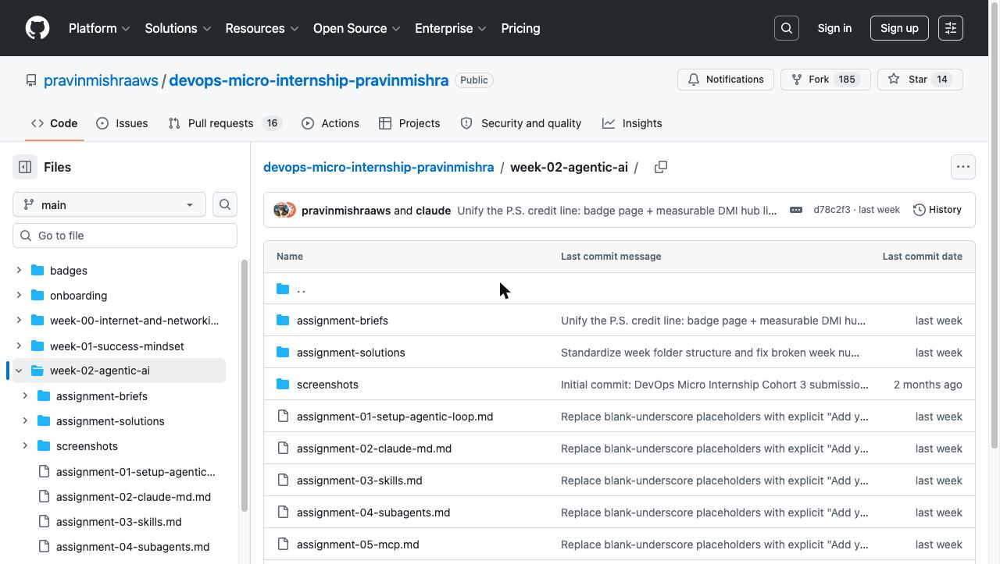

Learning DevOps With AI: Why DMI Teaches Claude Code Before Linux or Git
If you've read what a DevOps Micro Internship actually is, you already know DMI's 14 weeks run Internet & Networking, Success Mindset, then straight into something most DevOps programs don't touch until their final module, if they touch it at all: Agentic AI. Week 2. Before Linux. Before Git. Before a single cloud provider is mentioned. This post is about why that ordering is deliberate, and what actually happens in that week.
The traditional order, and why DMI breaks it
Most curricula treat AI tools as a bonus round — something you bolt on after you've learned "the real fundamentals," usually in the last few weeks if it appears at all. The implicit message is that AI is a productivity shortcut for people who already know what they're doing, not something a beginner should touch yet.
DMI inverts that. The reasoning is straightforward: the DevOps engineers getting hired in 2026 are the ones who can work alongside AI tools productively from day one — not the ones who learned every fundamental the old way first and are now retrofitting AI into a workflow they already built without it. If working with an AI coding agent is going to be part of the job either way, DMI teaches it as a working method from the start, not a topic covered in week 12 as an afterthought.
What Week 2 actually covers
Week 2 isn't a lecture about what AI is. It's five hands-on assignments, graded the same way every other week is — real files, real commits, checked by the same automated review agent:
- Assignment 1 — Your First Agentic Session. Set up a local environment for agentic AI: install and authenticate the Claude Code CLI, fork and clone the starter repository, and observe the core pattern that runs through the rest of the week — the Agentic Loop: Gather → Act → Verify.
- Assignment 2 — Claude.md. Learn to configure a project-level instruction file so an AI agent understands your codebase's context, conventions, and constraints before it starts making changes.
- Assignment 3 — Skills. Build and use reusable, packaged capabilities the agent can call on for specific tasks.
- Assignment 4 — Subagents. Work with delegated, task-specific agents instead of one general-purpose assistant doing everything.
- Assignment 5 — MCP. Connect the agent to external tools and data sources via the Model Context Protocol.
That's not a "how to prompt ChatGPT" week. It's the actual working vocabulary of agentic engineering — context files, skills, subagents, protocol-level tool connections — taught before students have written a line of Bash.

Why sequencing it first actually matters
Teaching the Agentic Loop — Gather → Act → Verify — before Linux, Git, or any cloud platform means students carry that verification habit into every week that follows. When you hit Week 4 (Git & GitHub) or Week 8 (Terraform), you're not learning those tools cold; you're applying a working method you already have, to a new domain. That's a meaningfully different experience from learning ten tools first and being told to "also try using AI" as an eleventh, disconnected topic.
It also sets the tone for the rest of the program in a more direct way: DMI's whole grading system — the review agent, the badge pages, the daily automated checks — is itself a piece of agentic infrastructure. Starting with Agentic AI in Week 2 means students understand, from early on, the kind of system that's grading their work every single day.
It's not a one-week detour
Agentic AI in Week 2 doesn't mean AI disappears for the other thirteen weeks. It's the foundation the rest of the curriculum builds on — Linux & Bash, Git & GitHub, AWS and Azure, Terraform, Ansible, Docker, Kubernetes, and CI/CD with Azure DevOps all follow, each graded the same way, by the same automated system, with the same expectation that your work is real and verifiable. See the full 14-week breakdown in what a DevOps Micro Internship actually is.
Why this matters for hiring in 2026
Employers aren't just hiring for Kubernetes or Terraform knowledge anymore — they're hiring for engineers who can work productively alongside AI agents without either blindly trusting the output or refusing to use the tool at all. That's a skill you build by practicing it early and often, not by cramming it in during interview prep. A DMI graduate's badge page shows exactly that: agentic AI work from week one, graded and verified the same way every other week is.
Curious what the rest of the program looks like? Start with DMI Self-Paced →